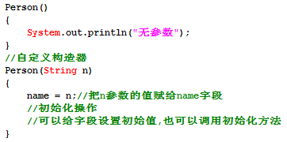

面向过程：一种较早的编程思想，顾名思义该思想是站在过程的角度思考问题，强调的就是功能行为,功能的执行过程,即先干啥,后干啥。而每一个功能我们都使用函数(类似于方法)把这些步骤一步一步实现，使用的时候依次调用函数就可以了。
面向过程的设计:
最小的程序单元是函数,每个函数负责完成某一个功能,用以接受输入数据,函数对输入数据进行处理,然后输出结果数据.
整个软件系统由一个个的函数组成,其中作为程序入口的函数称之为主函数,主函数依次调用其他函数,普通函数之间可以相互调用,从而实现整个系统功能.
面向过程的缺陷:
面向过程的设计,是采用置顶而下的设计方式,在设计阶段就需要考虑每一个模块应该分解成哪些子模块,每一个子模块有细分为更小的子模块,如此类推,直到将模块细化为一个个函数.
存在的问题:
1):设计不够直观,与人类的习惯思维不一致.
2):系统软件适应性差,可拓展性差,维护性低.
面向过程最大的问题在于随着系统的膨胀，面向过程将无法应付，最终导致系统的崩溃。为了解决这一种软件危机，我们提出面向对象思想。
面向对象：一种基于面向过程的新的编程思想，顾名思义该思想是站在对象的角度思考问题，我们把多个功能合理的放到不同对象里，强调的是具备某些功能的对象。
具备某种功能的实体，称为对象.
面向对象最小的程序单元是:类.
面向对象更加符合我们常规的思维方式，稳定性好，可重用性强，易于开发大型软件产品，有良好的可维护性。
在软件工程上，面向对象可以使工程更加模块化，实现更低的耦合和更高的内聚
当然上述例子仅仅只是说明了面向对象的一个特征——封装。除此之外面向对象还有两大特征，我们在具体讲解到的时候再做分析。
三大特征：
1:封装(Encapsulation)；
2:继承(Inheritance)；
3:多态(Polymorphism)；
封装是指将对象的实现细节隐藏起来，然后通过公共的方法来向外暴露该对象的功能。
继承是面向对象实现软件复用的重要手段，当子类继承父类后，子类是一种特殊的父类，能直接或间接获得父类里的成员。
多态是可以直接把子类对象赋给父类变量，但是运行时依然表现出子类的行为特征，这意味着同一类型的对象在运行时可能表现出不同的行为特征。
注意：
千万不要误解为面向对象一定就优于面向过程的设计
面向对象有三大特征:
1):封装
2):继承
3):多态
4):抽象
-------------------------------------------------------
什么是抽象：从特定的角度出发，从已经存在的一些事物中抽取我们所关注的特性、行为，从而形成一个新的事物的思维过程，是一种从复杂到简洁的思维方式。
此时，通过对多个同类型的对象分析，我们可以把对象抽象成类。
-----------------------------------------------------------------------------------------------------
类:
具有相同特性（状态）和行为（功能）的对象的抽象就是类。因此，对象的抽象是类，类的具体化就是对象，也可以说类的实例是对象，类实际上就是一种数据类型。
类具有特性，对象的状态，用成员变量来描述,封装数据。
类具有功能，对象的行为，用方法来描述。
-----------------------------------------------------------------------------------------------------
什么是类：类是对象的类型/模板。创建一个对象，就是使用一个类作为构建该对象的基础。
实际上，解释类和对象的关系确实存在着“先有蛋还是先有鸡”的问题，描述类少不了对象，相反，描述对象也少不了类。
不过在面向对象编程里，我们肯定是先有类的。如果没有类，对象就没法实例化。
-----------------------------------------------------------------------------------------------------
对象是类的实例，类是对象的模板。
创建一个学生对象的时候,代码如下:
Student s1 = new Student();
这个代码特别像:在调用一个方法名称为Student的无参数方法.
---------------------------------------------------------------------------------
我们把这种特殊的方法,称之为构造方法,构造器(构造函数/构造子:Constructor).
但是我们发现在Student类中,却找不到该构造方法,找不到,却又没有报错.
编译器在编译源文件的时候,会创建一个缺省的构造器.
---------------------------------------------------------------------------------
构造器的作用:
1):创建对象,凡是必须和 new 一起使用.
2):完成对象的初始化操作.
构造器的特点:
1):构造器的名称和当前所在类的名称相同.
如果构造器名称叫XXX, new XXX();你看出来创建的是什么类型的对象吗?
2):禁止定义返回类型,千万不要使用void作为返回类型. void Student(){}这是普通方法.
假设需要写返回类型,也应该这样写:Student Student(); 既然所有的返回类型都和所在类名相同,何必再写.
3):在构造器中,不需要使用return语句.
其实构造器是有返回值的,返回的是当前创建对象的引用.
---------------------------------------------------------------------------------
编译器创建的默认构造器的特点:
1):符合构造器特点.
2):无参数的.
3):无方法体.
4):如果类A没有使用public修饰,则编译器创建的构造器也没有public修饰.
使用了public修饰,则编译器创建的构造器也使用public修饰.
构造器:如果我们没有显示提供构造器,则编译器在编译时创建一个缺省的构造器.
但是,如果我们显示定义了一个构造器,则编译器不再创建默认构造器.
------------------------------->推论:某一个类,至少存在一个构造器.
方法的重载(Overload):
避免了在同一个类中,相同功能的方法名字不同的问题.
判断依据:两同一不同.
-------------------------------------------------------
构造器是一种特殊的方法,也可以存在重载.

状态和行为应该有对象和类型之分.
有的状态和行为应该属于对象,不同的对象,状态和行为可以不一样.
有的状态和行为应该属于类型,不属于对象.
问题:现在如何表示人类毁灭这个行为(destory).
要解决该问题,得学习static修饰符.
static修饰符表示静态的，可修饰字段、方法、内部类，其修饰的成员属于类,也就是说static修饰的资源属于类级别,而不是对象级别。
static的真正作用：用来区别字段，方法，内部类，初始化代码块是属于对象还是属于类本身。
static修饰符的特点:
1):static修饰的成员(字段/方法),随着所在类的加载而加载.
当JVM把字节码加载进JVM的时候,static修饰的成员已经在内存中存在了.
2):优先于对象的存在.
对象是我们手动通过new关键字创建出来的.
3:satic修饰的成员被该类型的所有对象所共享.
根据该类创建出来的任何对象,都可以访问static成员.(狗天生就吃屎.)
剧透:表面上通过对象去访问static成员,其本质依然使用类名访问,和对象没有任何关系(通过反编译看到的).
4):直接使用类名访问static成员
因为static修饰的成员直接属于类,不属于对象,所以可以直接使用类名访问static成员.
类成员和实例成员的访问 :
类中的成员:字段,方法,内部类.
类成员: 使用static修饰的成员.
实例成员: 没有使用static修饰的成员.
----------------------------------------------------------------------------
类成员只能访问类成员,实例成员只能访问实例成员.
----------------------------------------------------------------------------
类成员,直接属于类, 可以通过类来访问static字段和static方法.
实例成员,只属于对象, 通过对象来访问非static字段和非static方法.
(对象其实可以访问类成员,但是底层依然使用类名访问的.)
---------------------------------------------------------------------------------------------
在static方法中,只能调用static成员.
非static方法,可以访问静态成员,也可以访问实例成员.
什么时候定义成static的字段和方法:
如果这个一个状态/行为属于整个事物(类),就直接使用static修饰.
被所有对象所共享.
---------------------------------------------------------
在开发中,往往把工具方法使用static修饰.
如果不使用static修饰,则这些方法属于该类的对象,我们得先创建对象再调用方法,在开发中工具对象只需要一份即可,可能创建N个对象,此时我们往往把该类设计为单例的.,但是还是有点麻烦.
所以,一般的,在开发中设计工具方法,为了调用简单,我们使用static修饰.
--------------------------------------------
类成员的使用
利处：对对象的共享数据进行单独空间的存储，节省空间,没有必要每一个对象中都存储一份,可以直接被类名调用。
弊端：生命周期过长。